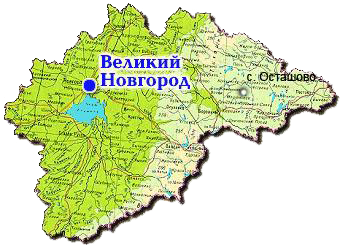

- лэш
 поступление
поступление- задачи школы
- олимпиады

Биотехнология и молекулярная биология

В 2007 году школа проводилась в селе Осташово Мошенского района Новгородской области.
Биотехнология
Программа курса:
- Культура клеток высших растений – уникальная биологическая система.
- получение культуры клеток высших растений; экспланты; дедифференциация тканей высших растений in vitro
- каллусные и суспензионные культуры – два способа культивирования
- каллусы
- первичный каллусогенез; характеристики каллусов; рост каллусных культур; краткий обзор питательных сред для культивирования
- суспензионные культуры
- получение, характеристики суспензионных культур; рост клеток в суспензиях, закономерности роста; ростовая кривая, ее особенности.
- Культуры как популяции соматических клеток.
- гетерогенность как основа устойчивости популяции клеток; клеточный цикл in vitro, его синхронизация
- дифференциация в культуре клеток in vitro; индукция дифференциации; типы дифференциации; гистогенез, вегетативный и флоральный органогенез; униполярный и биполярный морфогенез (соматический эмбриогенез); факторы, влияющие на дифференциацию в культуре клеток
- Использование культур клеток в биологии и биотехнологии. Краткий обзор.
- фотосинтеза
- минерального питания
- устойчивости и защитных систем растений
- роста и развития
- биосинтеза вторичных метаболитов
- клеточная культура – адекватная модель растительного организма или это система, существующая по законам популяции
- клеточные культуры – возможность сохранения редких видов в коллекциях; коллекции растительных объектов in vitro; пересадочные и депонированные коллекции; криосохранение культур клеток и меристем
- клональное микроразмножение; клеточная селекция и индуцированный мутагенез; изолированные протопласты; методы получения и культивирования; манипуляции с изолированными протопластами; использование протопластов для клеточной селекции; генная инженерия растений; векторы переноса генетической информации у растений; регенерация трансформированных клеток, экспрессия и генетическая стабильность чужеродных генов.
культура клеток как модель для исследования:
Молекулярная биология
Программа курса:
- Центральная догма молекулярной биологии (ДНК→ РНК→ белок).
- Строение молекулы ДНК. Комплементарность. Правило Чаргаффа. Различные формы ДНК (последовательность ДНК определяет свойства). Сверхспирализация. Топоизомеразы. Структура хромосом у про- и эукариот. Различные уровни компактизации ДНК.
- Репликация ДНК. Белки входящие в состав репликационного комплекса (праймаза, хеликаза, SSB, ДНК-полимераза), координация синтеза ДНК на ведущей и отстающей нитях. Точки начала репликации у прокариот и эукариот. Разделение хромосом между дочерними клетками. Строение теломер хромосом эукариот.
- Репарация ДНК. Различные типы репарации: эксцизионная репарация, mismatch-репарация, sos-репарация, репарация двойных разрывов.
- Рекомбинация ДНК. Гомологичная рекомбинация, связь с репарацией и репликацией. Сайт-специфическая рекомбинация.
- Транскрипция. РНК-полимераза бактерий. Роль σ-фактора в инициации транскрипции, строение промотора. Элонгация и терминация транскрипции. Оперон у прокариот. Полицистронные и моноцистронные мРНК. Транскрипция у эукариот: разные РНК-полимеразы ответственны за транскрипцию разных генов. Разные виды РНК. Структура мРНК эукариот: экзоны и интроны.
- Процессинг РНК. Модификации мРНК: cap и polyA-последовательность. Сплайсинг. Альтернативный сплайсинг. Самосплайсирующиеся интроны, рибозимы. Функции РНК: кодирующая, структурная и каталитическая. Структура рибосом.
- Синтез белка. Кодирование последовательности белка в последовательности мРНК: триплетность, неперекрываемость и вырожденность генетического кода. Трансляция: инициация, элонгация и терминация. Элонгационный цикл рибосомы: связывание аминоацилированной тРНК, транспептидация, транслокация. Frameshifting, wobble гипотеза. Судьба синтезированного пептида. Посттрансляционные модификации. Внутриклеточная локализация белков, роль сигнальных последовательностей.
- Регуляция экспресии генов на различных уровнях. Регуляция на уровне транскрипции. Роль белков хроматина (гистонов и негистоновые белков) в регуляции экспрессии генов. Регуляция на уровне мРНК. Регуляция на уровне трансляции. Деградация белков и протеасома.